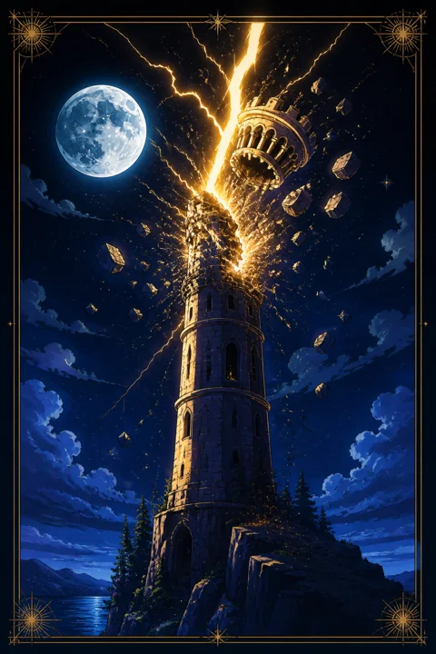

XVI 탑 카드 — 무너진 뒤에 드러나는 기초
탑 카드 한눈에 보기
탑 카드 상징 읽기

동네보살의 카드 그림은 전통 라이더–웨이트 덱의 뜻을 새 그림으로 옮긴 것입니다. 아래 상징 설명은 전통 덱의 그림을 기준으로 합니다.
바위산 꼭대기에 선 높은 탑에 번개가 내리꽂히는 장면이 그림의 중심입니다. 번개는 하늘에서 떨어진 깨달음처럼, 예고 없이 찾아와 거짓된 구조를 한순간에 드러내는 힘을 뜻합니다.
탑 꼭대기의 왕관이 튕겨 나가는 모습도 보입니다. 왕관은 스스로 쌓아 올린 자부심이나 확신을 상징하며, 그것이 벗겨진다는 것은 당연하다고 믿던 전제가 흔들린다는 의미입니다.
창문에서 불길이 치솟고 두 사람이 거꾸로 떨어지고 있습니다. 공중에 흩날리는 스물두 개의 불꽃 방울은 히브리 문자를 닮았다고 해석되는데, 무너짐 속에서도 더 큰 질서가 작동하고 있다는 암시로 읽힙니다.
탑이 서 있는 뾰족한 바위산은 애초에 불안정한 토대 위에 쌓아 올린 욕심을 뜻하고, 배경의 칠흑 같은 하늘은 익숙한 빛이 사라진 혼란의 순간을 보여줍니다. 그러나 번개가 번쩍인 뒤에야 어둠 속에 무엇이 서 있었는지 똑똑히 보이게 됩니다.
탑 카드 정방향 뜻
정방향 탑은 오래 버텨온 구조가 갑자기 무너지는 순간을 보여줍니다. 계획이 틀어지거나, 믿던 사람의 다른 얼굴을 보거나, 스스로 외면해온 사실을 더는 피할 수 없게 되는 일이 여기에 해당합니다.
처음에는 당황스럽고 억울한 마음이 들 수 있습니다. 그러나 이 카드가 전하는 핵심은 파괴 그 자체가 아니라 드러남입니다. 겉으로는 멀쩡했지만 속이 비어 있던 부분이 이번 기회에 확인된 것입니다.
흔들리는 동안에는 무리하게 원래대로 되돌리려 애쓰기보다 무엇이 남았는지를 살펴보시길 권합니다. 무너지지 않고 버틴 관계, 끝까지 남은 능력과 가치관이 앞으로 새로 쌓을 탑의 진짜 주춧돌이 됩니다.
충격 직후에는 큰 결정을 한꺼번에 내리기보다 마음을 추스르는 시간을 먼저 가지는 편이 좋습니다. 무너진 자리를 정리하다 보면 예전에는 보이지 않던 새로운 길이 눈에 들어옵니다.
탑 카드 역방향 뜻
역방향 탑은 두 갈래로 읽힙니다. 하나는 번개가 비껴가듯 큰 충격을 아슬아슬하게 피하는 흐름이고, 다른 하나는 무너짐이 서서히, 조용히 진행되는 흐름입니다. 어느 쪽이든 폭풍처럼 한꺼번에 몰아치기보다는 속도가 늦춰진 모습입니다.
일부 전통에서는 이를 오히려 풀림으로 봅니다. 억지로 유지하던 것을 스스로 내려놓아 극적인 붕괴 없이 정리가 이루어지는 경우입니다. 이 경우라면 충격이 작고 추스르는 시간도 짧은 편입니다.
주의할 점은 피했다는 안도감에 기대어 원인을 방치하는 것입니다. 금이 간 벽은 한 번 버텼다고 튼튼해지지 않습니다. 지금 여유가 생겼다면 그 시간을 구조를 손보는 데 쓰시는 것이 이 카드의 가장 좋은 활용법입니다. 미뤄둔 대화나 점검을 이번에 조금씩 해 두면 다음 번개를 두려워할 필요가 줄어듭니다.
연애에서 탑 카드
솔로라면 이상형이나 연애에 대한 고정관념이 깨지는 경험을 할 수 있습니다. 전혀 예상하지 못한 사람에게 마음이 흔들리거나, 기대하던 만남이 실망으로 끝나며 내가 정말 원하는 관계가 무엇인지 새로 보게 되는 흐름입니다. 당황스럽더라도 그 깨달음이 다음 인연을 고르는 눈을 바꿔 줍니다.
연애 중이라면 참고 넘기던 문제가 한꺼번에 불거질 수 있습니다. 사소한 말다툼이 큰 싸움으로 번지거나, 숨겨둔 사정이 드러나 관계가 크게 흔들리는 장면이 떠오르는 카드입니다. 이 충돌은 끝을 뜻할 수도 있지만, 서로 가면을 벗고 진짜 대화를 시작하는 출발점이 되기도 합니다. 감정이 가라앉은 뒤 무엇이 무너졌고 무엇이 남았는지 함께 확인해 보세요. 다툼이 끝난 뒤에도 곁에 남아 있다면 그 관계는 예전보다 훨씬 솔직한 토대 위에 설 수 있습니다.
재회·속마음 질문에서 탑 카드
재회 질문에서 탑은 이전 관계가 끝난 방식이 급작스럽고 격렬했음을 비추는 경우가 많습니다. 상대의 속마음에는 아직 그때의 충격과 서운함이 정리되지 않은 채 남아 있을 수 있습니다.
그래서 예전 모습 그대로 다시 합치기는 어렵다고 보는 편이 현실적입니다. 만약 인연이 이어진다면 그것은 옛 관계의 복구가 아니라 무너진 자리에서 전혀 다른 방식으로 새로 짓는 관계여야 합니다. 서두르기보다 그 사람과 새 기초를 쌓을 의지가 있는지부터 생각해 보시길 권합니다. 상대의 감정이 가라앉기까지 시간이 필요하다는 점을 받아들이는 것도 이 카드가 권하는 태도입니다.
일·금전에서 탑 카드
일에서는 조직 개편, 프로젝트 중단, 거래처 변경처럼 내 의지와 무관한 변수가 계획을 흔들 수 있는 시기입니다. 오래 공들인 일이 한순간에 방향을 잃는 듯 보여도, 그 과정에서 애초에 무리했던 구조나 숨어 있던 약점이 선명해집니다.
금전 면에서는 예상하지 못한 지출이 생기거나 믿었던 수입원이 흔들릴 여지가 있으니, 한 곳에 모든 것을 걸어두지 않는 편이 마음이 편합니다. 이 카드가 나왔을 때 새로운 큰 약속을 서둘러 맺기보다는, 지금 가진 기반 중 어디가 허술한지 점검하고 비상 계획을 세워두시길 권합니다. 흔들림이 지나간 뒤에는 불필요한 일을 덜어내고 핵심에 집중하는 구조를 새로 짤 기회가 생기니, 변화를 기록해 두며 차분히 다음 수를 준비해 보세요.
탑 카드는 예일까 아니오일까
계획이 예상 밖의 변수로 흔들릴 수 있어 정방향에서는 아니오에 가깝습니다. 역방향이면 큰 충돌은 피하지만 근본 문제를 손본다는 조건으로만 가능성이 열립니다.
자주 묻는 질문
탑 카드 역방향은 나쁜 뜻인가요?
역방향 탑은 두 갈래로 읽힙니다. 하나는 번개가 비껴가듯 큰 충격을 아슬아슬하게 피하는 흐름이고, 다른 하나는 무너짐이 서서히, 조용히 진행되는 흐름입니다. 어느 쪽이든 폭풍처럼 한꺼번에 몰아치기보다는 속도가 늦춰진 모습입니다.
탑 카드가 연애 질문에 나오면요?
솔로라면 이상형이나 연애에 대한 고정관념이 깨지는 경험을 할 수 있습니다. 전혀 예상하지 못한 사람에게 마음이 흔들리거나, 기대하던 만남이 실망으로 끝나며 내가 정말 원하는 관계가 무엇인지 새로 보게 되는 흐름입니다. 당황스럽더라도 그 깨달음이 다음 인연을 고르는 눈을 바꿔 줍니다.
타로 카드는 어떻게 뽑나요?
타로 카드 페이지에서 카드를 섞으면 메이저 아르카나 22장이 펼쳐집니다. 마음이 가는 세 장을 고르면 과거·현재·미래 자리에 놓이고, 한 장씩 뒤집어 자리와 방향에 맞는 풀이를 읽습니다. 정방향과 역방향은 섞는 순간 정해집니다.